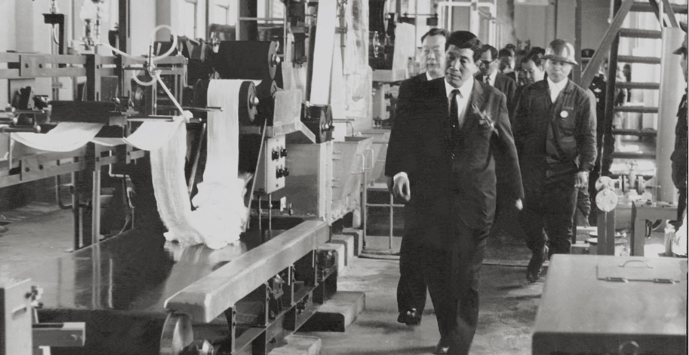
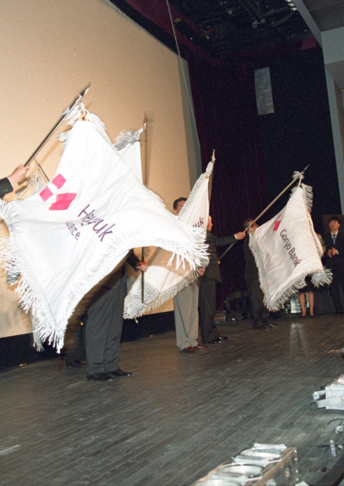
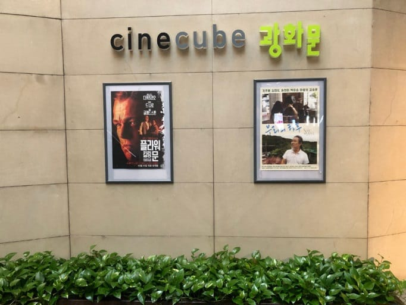
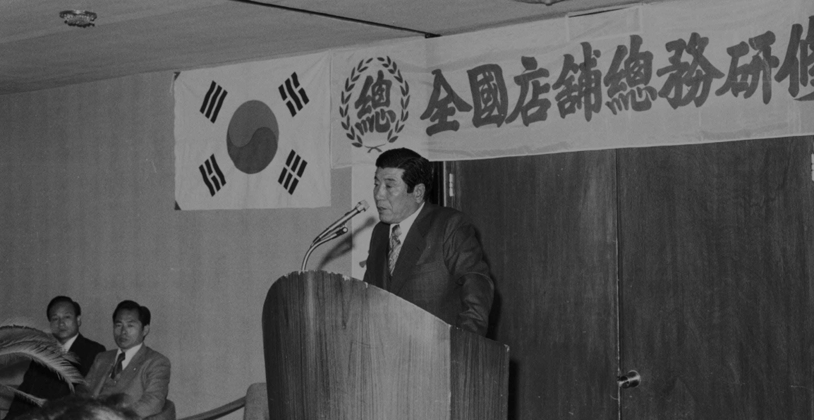
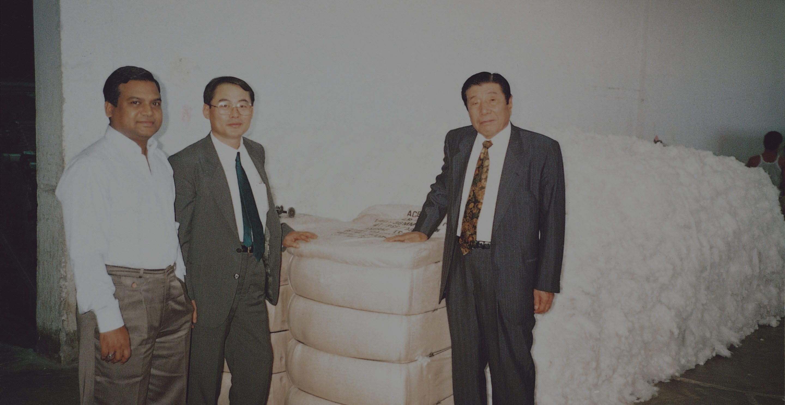

History
Museum
Museum

History of
- Challenge
- Innovation
- Sharing
Challenge
도전 의 역사
넘어졌다면 흙이라도 한 줌 줍고 일어나라!
태광을 이야기하는 키워드, 바로 도전입니다.
Innovation
혁신 의 역사
계절을 앞서 준비하는 지혜를 가져야 한다.
태광의 역사는 혁신을 통한 성장의 역사입니다.
Sharing
나눔 의 역사
숲의 열매는 함께 나누어야 한다.
태광의 나눔은 당신을 향합니다.
September Taekwang

예술영화관 ‘씨네큐브’ 티캐스트 운영 시작 2009
1950
1969
1950~1969
기틀을 닦다 : 창업, 주식회사로 성장과 정착
- 1950 02. 태광산업 출범 (동양실업 지분투자)
- 1954 01. 태광산업사 설립
- 1961 02. 태광산업주식회사 설립
- 1963 01. 가야공장, 직사방, 방모방 체계 구축
- 1967 05. 울산공장, 아크릴 생산 개시
- 1968 04. ‘태광산업주식회사’ 상표 등록
- 1969 03. 동래공장, 일관 생산 체계 구축 (화섬방, 직사방, 방모방)

1950
1969
1950~1969
기틀을 닦다 : 창업, 주식회사로 성장과 정착
- 1950 02. 태광산업 출범 (동양실업 지분투자)
- 1954 01. 태광산업사 설립
- 1961 02. 태광산업주식회사 설립
- 1963 01. 가야공장, 직사방, 방모방 체계 구축
- 1967 05. 울산공장, 아크릴 생산 개시
- 1968 04. ‘태광산업주식회사’ 상표 등록
- 1969 03. 동래공장, 일관 생산 체계 구축 (화섬방, 직사방, 방모방)

1971
1995
1971~1995
날개를 펴다 : 사업 다각화, 섬유·소재 수직 계열화 완성
- 1971 02. 동양합섬주식회사 흡수합병 08. 태광산업여자배구단 창단
- 1973 03. 금융업 진출 (흥국생명 인수) 05. 제 10회 수출의 날 대통령 표창 수상
- 1975 02. 서울 본사 이전 02. 폴리에스테르 생산 (대한화섬 인수) 12. 태광산업 기업공개
- 1977 01. 학교법인 일주학원 설립(세화여·중고 설립인가)
- 1978 03. 고려저축은행 인수
- 1979 03. 국내 최초 스판덱스 생산
- 1987 03. 대한화섬, 최우수기업대상 수상(대신경제연구소)
- 1990 02. 흥국생명 여자배구단 창단 02. 재단법인 일주학술문화재단 설립
- 1993 10. 중앙연구소 설립 (대덕연구단지)
- 1995 02. 섬유·소재 수직 계열화 완성 (석유화학 1, 2, 3 공장 설립)